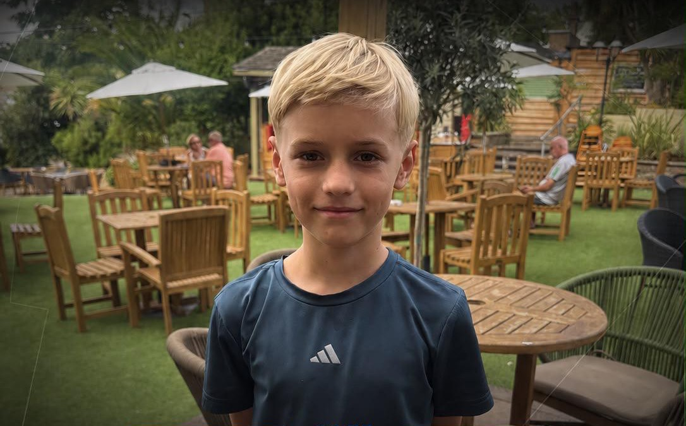

Signed with Fulham Academy
Jaxon — From The Footballers Blueprint to Fulham Academy
"The Footballers' Blueprint became part of our weekly routine. The position-specific training, advice and guidance have been brilliant. He's now part of Fulham Academy."